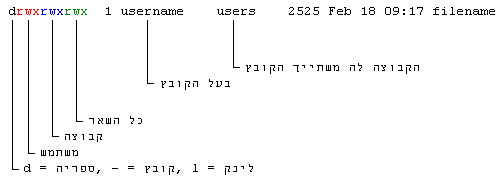

ניהול הרשאות, משתמשים, קבוצות וגישה לרכיבים
לפורום המאמרchmod
לכל קובץ במערכת הקבצים של לינוקס בלינוקס יש הרשאות.
בעזרת הרשאות אתה יכול לקבוע מי יכול לקרוא, לכתוב או להריץ קובץ מסויים
וכך למנוע גישה ממשתמשים אחרים לקבצים הפרטיים שלך.
הריצו
ls -l בשורת הפקודה מסויים ותקבלו פלט כזה:

שימו לב שיש שלוש קטגוריות - משתמש, קבוצה והרשאות ושלושה סוגי הרשאות - קריאה (r) כתיבה (w) והרצה
(x)
chmod מקבלת שני פרמטרים, הראשון הוא סוג ההרשאה והשני הוא שם הקובץ שעליו תתבצע הפעולה.
פרמטר ההרשאה יכול לבוא בצורת מחרוזת תווים או בצורת מספר.
שיטת המספרים
| ערך מספרי | מחרוזת | משמעות |
| 0 | --- | אין גישה |
| 1 | x-- | הרצה |
| 2 | -w- | כתיבה |
| 3 | -wx | כתיבה+הרצה |
| 4 | --r | קריאה |
| 5 | r-x | קריאה+הרצה |
| 6 | -rw | קריאה+כתיבה |
| 7 | rwx | קריאה+כתיבה+הרצה |
כמו שרואים לכל סוג הרשאה יש יצוג מספרי ובשביל לשלב כמה סוגי הרשאות פשוט מחברים
את המספרים לדוגמא, הרצה = 1 ,כתיבה = 2 ,הרצה+כתיבה = 3.
דוגמא נוספת, אם נריץ
chmod 750 file
7 - המשתמש יכול לקרוא, לכתוב ולהריץ את הקובץ.
5 - הקבוצה יכולה לקרוא ולהריץ את הקובץ.
0 - ולשאר המשתמשים אין שום גישה לקובץ.
משמעות ההרשאות אצל ספריות שונה מאשר אצל קבצים,
r - הדפסת רשימת הקבצים שבספריה
w - הוספת קבצים לספריה
x - גישה לקבצים שבספריה
כך שניתן למנוע ממשתמשים אחרים לראות, להוסיף ולהריץ קבצים בספריות המכילות חומר פרטי.
שיטת ההתווים
אפשר גם לשנות הרשאות על ידי שימוש בתווים המציינים את סוג ההרשאה במקום מספרים.
תחביר:
chmod [ugo] [+ - =] [rwx] FILE
u - משתמש
(user)
g - קבוצה
(group)
o - כל השאר
(other)
chmod ugo+rwx file
ייתן גישה מלאה לקובץ (קריאה, כתיבה, הרצה) לכל המשתמשים
chmod o-rwx file
יבטל לכל המשתמשים שהם לא בקבוצה ולא בעל הקובץ את הגישה.
כאשר משתמשים בתווי הפלוס\מינוס מוסיפים ומורידים הרשאות להרשאות הקיימות, אבל כשמשתמשים
בתו = ההרשאות הקודמות מתבטלות ורק החדשות נשארות (ולא מתווספות להרשאות הקודמות)
chown
ניתן לשנות את בעליו של קובץ מסויים באמצעות הפקודה
chown, לדוגמא:
chown aviran index.html
תשנה את בעליו של הקובץ
index.html למשתמש
aviran.
דוגמא יותר מורכבת:
chown -R aviran *.html
השימוש בפרמטר
R אומר ל
chown לשנות באופן ריקורסיבי את כל הקבצים ותתי הספריות מהמיקום הנוכחי למשתמש
aviran,
ומשמעות המחרוזת "
html.*" היא שהפקודה תחול על כל הקבצים עם סיומת
html.
רק בעל הקובץ אל המשתמש
root יכולים לשנות בעלים של קובץ.
groupadd
יצירת קבוצת משתמשים חדשה.
groupadd students
הוספת קבוצת משתמשים חדשה בשם
students, הID של הקבוצה נקבע באופן אוטומטי על ידי המערכת.
groupadd -gid 1000 developres
הוספת קבוצת משתמשים חדשה בשם
developers, הID של הקבוצה יהיה 1000.
מקובל לשמור את הערכים מ0-99 לקבוצות בשימוש המערכת.
usermod
באמצעות הפקודה
usermod מבצעים שינויים בהגדרות המשתמש, אחד הדברים שניתן להגדיר הוא הקבוצות אליהן שייך המשתמש.
usermod -G students,developers aviran
הוספת המתשמש
aviran לקבוצות
students,
developers.
groupdel
groupdel developers
מחיקת הקבוצה
students.
groups
הפקודה מציגה את כל הקבוצות שהמשתמש שניתן כארגומנט שייך אליהן.
בשביל להוציא משתמש מקבוצה צריך להשתמש בפקודה usermod ולמנות את כל הקבוצות שאליהן אנו רוצים שהמשתמש ישתייך.
כל הנתונים על הקבוצות מאוכסנים בקובץ
/etc/group, ניתן לערוך את הקובץ ולעשות שינויים בקבוצות.
mount
הפקודה mount מקשרת בין רכיב לבין ספריה מקומית, הרכיב יכול להיות דיסק קשיח, מחיצה על הדיסק הקשיח, CDROM\צורב, מפתח USB וכדומה.
לאחר העלאה (mount) מוצלחת גישה לספריה המקומית תתן גישה למערכת הקבצים של הרכיב.
ישנה אפשרות לציין את סוג הרכיב אותו אנחנו מעלים, למרות שברוב המקרים אין צורך מכיוון שהגרסאות החדשות של mount מכילות מנגנון של זיהוי אוטומטי.
רכיבים וסוגיהם:
vfat - FAT32
ntfs - NTFS
iso9660 - CDROM
ext2 - Linux ext2
ext3 - Linux ext3
רכיבי חומרה בלינוקס מיוצגים על ידי קבצים, זאת אומרת שאם אני רוצים לתקשר (לשלוח\לקבל נתונים) עם רכיב מסויים אני צריכים לקרוא ולכתוב
לקובץ מסויים, כאשר אנחנו רוצים לגשת לרכיב מסויים אנחנו צריכים לציין את שם הקובץ שמייצג אותו.
כל הקבצים שמייצגים רכיבים נמצאים תחת הספריה
/dev לדוגמא כונן הCDROM מייוצג על ידי הקובץ
/dev/cdrom
בשביל לגלות את שמות הכוננים הקשיחים והמחיצות שלכם הריצו
fdisk -l פקודה זה תדפיס לכם את המחיצות ואת שמות הקבצים שמייצגים אותם.
גישה למחיצת: FAT32
mount -t vfat /dev/hda1 /mnt/windows
במחשב הזה הקובץ שמייצג את המחיצה נקרא hda1 וקיימת ספריה בשם windows תחת הספריה mnt, משתמשים בפרמטר
-t בשביל לציין
את סוג המחיצה.
הספריה אליה אתם מעלים את הרכיב חייבת להיות קיימת, אחרת תקבלו הודעת שגיאה.
ניתן להריץ
mount /dev/hda1 /mnt/windows והתוכנה תזהה באופן אוטומטי שמדובר במחיצת FAT32 ותעלה את המחיצה.
יש אפשרות להריץ רק
mount /dev/hda1 או
mount /mnt/windows במידה והגדרתם את המחיצה בקובץ
/etc/fstab
תהליך זה יוסבר בהמשך.
גישה ל CDROM
בעיקרון, ההבדל הוא לא משמעותי
mount -t iso9660 /dev/cdrom /mnt/cdrom
פה הקובץ שמייצג את הCDROM הוא
/dev/cdrom הספריה שאליה מעלים את הקובץ היא
/mnt/cdrom והסוג הוא
iso9660
גם פה אפשר לקצר ולהריץ רק
mount /dev/cdrom בהנחה שהגדרנו את ה CDROM בקובץ
/etc/fstab
גישה לכונן הדיסקטים
mount -t auto /dev/fd0 /mnt/floppy
סוג הרכיב הוא
auto, כלומר התוכנה תזהה את סוג הרכיב ומערכת הקבצים שלו לבד.
umount
בשביל לבטל את הקישור בין הספריה לרכיב משתמשים בפקודה umount ונותנים לה את כפרמטר את הקובץ שמייצג את הרכיב
umount /dev/cdrom
יסיים את הגישה ל cdrom
/etc/fstab
בקובץ זה כתובים נתונים לגבי הרכיבים שניתן להעלות אותם, בקובץ זה אפשר להגדיר את הספריה
שדרכה ניגש לרכיב, גיבויים ובדיקות תקינות אוטומטים, סוג הגישה לרכיב ועוד.
הנתונים לגבי רכיב אחד נכתבים בשורה אחת וכל שורה מורכבת משש שדות
דוגמא לשורה מקובץ
/etc/fstab:
/dev/hda1 /mnt/hda1 vfat noauto,ro 0 0
משמעות השדות
/dev/hda1 הקובץ שמייצג את המחיצה
/mnt/hda1 המיקום בדיסק הקשיח שדרכו ניגש למחיצה
noauto,ro אפשרויות ההעלאה,
noauto - המחיצה לא תעלה אוטומטית עם המערכת,
ro המחיצה תהיה נגישה לקריאה בלבד
vfat סוג המחיצה במקרה הזה fat32
0 הפרמטר הזה אומר למערכת ההפעלה אם הרכיב אמור לעבור גיבויים שיגרתיים, 0 = לא, 1 = כן.
0 הפרמטר הזה אומר למערכת ההפעלה אם הרכיב אמור לעבור בדיקת תקינות שיגרתית
/etc/fstab הוא אחד הקבצים שנבדקים כשהמערכת עולה, ועל פיו המערכת יודעת איזה רכיבים להעלות עם המערכת.